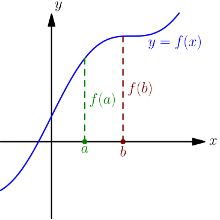
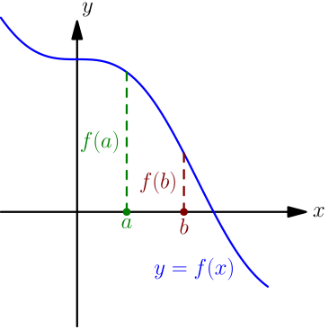
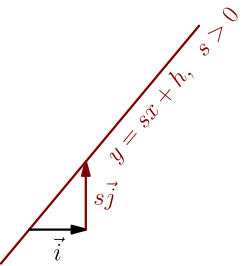
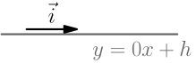
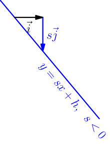
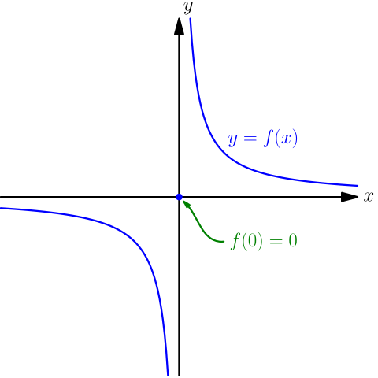
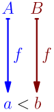

Strictly Increasing/Decreasing Functions¶
On this page, the word "function" means a function that takes in a real number as its only argument, and evaluates to another real number. Some real numbers might not be valid inputs of the function; for example, square root is a function that accepts only nonnegative inputs.
Definition of Strictly Increasing¶
A function $f$ is called strictly increasing, if for all numbers $a$ and $b$ satisfying $a < b$, we have $f(a) < f(b)$. If the function $f$ is not defined for all numbers, then we only require that this happens for all numbers $a,b$ for which $f(a)$ and $f(b)$ are defined.
Examples:
- Let $f(x) = x+1$. This is a strictly increasing function, because for all numbers $a$ and $b$ with $a < b$, we have $a+1 < b+1$. Because $f(a)=a+1$ and $f(b)=b+1$, this means that we have $f(a) < f(b)$.
- Let $f(x) = 3$. This is not a strictly increasing function, because that would mean that for all numbers $a$ and $b$ with $a < b$, we have $3 < 3$, which is not true.
- Let $f(x) = x^2$. This is not a strictly increasing function, because $-2 < -1$ but $f(-2) > f(-1)$.
Next, let's talk about what this looks like in a graph. Let $f$ be a function, and consider the graph $y=f(x)$. Let $a$ and $b$ be numbers for which $f(a)$ and $f(b)$ are defined and $a < b$. The condition $a < b$ means that if $a$ and $b$ are drawn on the $x$ axis, then $a$ is on the left side of $b$.

Now the condition $f(a) < f(b)$ means that the graph is higher at $b$ than it is at $a$; in other words, the value of the function increases if you go from $a$ to $b$. When defining what strictly increasing means, we require that this happens for all $a$ and $b$ with $a < b$.
Definition of Strictly Decreasing¶
A function $f$ is called strictly decreasing, if for all numbers $a$ and $b$ satisfying $a < b$, we have $f(a) > f(b)$. If the function $f$ is not defined for all numbers, then we only require that this happens for all numbers $a,b$ for which $f(a)$ and $f(b)$ are defined.
The definition is otherwise the same as for strictly increasing, but the sign between $f(a)$ and $f(b)$ is $ > $ instead of $ < $. This means that in the graph of $f$, going from $a$ to $b$ will give a decrease in the $y$ value.

The Function $f(x)=sx+h$¶
From line equation with slope, we know that if $s$ and $h$ are any numbers, then $y=sx+h$ is the equation of some non-vertical line, with the vector $\I+s\J$ going along the line. The vector $\I$ is horizontal, of course, but the effect of the ${}+s\J$ part depends on the value of $s$:
- If $s$ is positive, then $s\J$ goes up.
- If $s$ is zero, then $s\J$ is the zero vector.
- If $s$ is negative, then $s\J$ goes down.
The following pictures show what this looks like:



The above lines are graphs of the function $f(x)=sx+h$. We get the following result by comparing these graphs with the graphs I drew when explaining the definitions of strictly increasing and strictly decreasing.
The function $f(x) = sx+h$ is strictly increasing if and only if $s > 0$, and strictly decreasing if and only if $s < 0$.
If $s=0$, we get the function $f(x)=h$, which is neither strictly increasing nor strictly decreasing.
Do Strictly Increasing/Decreasing Functions Have an Inverse Function?¶
Make sure that you are familiar with inverse functions. Here are some example functions:
- The function $f(x)=2x$ is strictly increasing, and it has an inverse function given by $f^{-1}(x) = \frac{x}{2}$.
- The function $g(x)=-2x$ is strictly decreasing, and it has an inverse function given by $g^{-1}(x) = \frac{x}{-2}$.
- The function $h(x)=x^2$ is neither strictly increasing nor strictly decreasing, and it does not have an inverse function.
In these examples, the strictly increasing and strictly decreasing functions $f$ and $g$ have inverse functions. Let's figure out whether any strictly increasing or strictly decreasing function has an inverse function.
Let $f$ be a strictly increasing function. The only thing that could go wrong is getting the same $f$ values for two different inputs; that is, $a \ne b$ but $f(a)=f(b)$. This can't happen with a strictly increasing $f$, because
- if $a < b$, then $f(a) < f(b)$;
- if $a > b$, then $b < a$ and so $f(b) < f(a)$.
Either way, we get $f(a) \ne f(b)$ whenever $a \ne b$, and this guarantees that an inverse function exists. A similar proof works for strictly decreasing functions; the only difference is that we have $f(a) > f(b)$ and $f(b) > f(a)$ at the end.
A strictly increasing or strictly decreasing function has an inverse function.
This does not go the other way: there are functions that have an inverse function but are neither strictly increasing nor strictly decreasing. One such example is the following function, defined for all $x \in \mathbb{R}$: $$ f(x) = \begin{cases} 0, & \text{if $x=0$}; \\ \frac{1}{x}, & \text{if $x \ne 0$}. \end{cases} $$

First of all, notice how this function never divides by zero. This function is the inverse function itself, because $$ f(\underbrace{f(0)}_0) = f(0) = 0, $$ and for $x \ne 0$ we get $$ f(f(x)) = f\Bigl( \, \underbrace{\frac{1}{x}}_{\ne 0} \, \Bigr) = \frac{1}{~\frac{1}{x}~} = x. $$ So, we have $f(f(x))=x$ for all $x \in \mathbb{R}$, just like in the definition of inverse function. This function is not strictly increasing because $f(1) > f(2)$, and it's also not strictly decreasing because $f(-1) < f(1)$.
Is the Inverse Strictly Increasing/Decreasing?¶
Above we showed that a strictly increasing/decreasing function has an inverse. Let's see what properties such inverse functions have.
The inverse of $f(x)=2x$ is $f^{-1}(x) = \frac{x}{2} = \frac 1 2 x$, which itself is also a strictly increasing function. Next we'll prove that the inverse of any strictly increasing function is also strictly increasing.
Let $f$ be a strictly increasing function, and let $a$ and $b$ be numbers such that $a < b$, $f^{-1}(a)$ is defined, and $f^{-1}(b)$ is defined. Now we need to show that $f^{-1}(a) < f^{-1}(b)$, which will then prove that $f^{-1}$ is strictly increasing.
Because $f^{-1}(a)$ and $f^{-1}(b)$ are defined, we know that $a$ and $b$ must be values of $f$, corresponding to some input numbers that have been given to $f$. We call these input numbers $A$ and $B$, so we have $f(A)=a$ and $f(B)=b$.

Combining some of the things we have so far, we get $$ f^{-1}(a) = f^{-1}(f(A)) = A, $$ where we started by substituting $a=f(A)$, and then we used the definition of inverse function. Similarly $f^{-1}(b) = B$. So, we just need to show that $A < B$ and we'll be done.
To show that $A < B$, we show that all other options are impossible:
- If $A=B$, then $a = f(A) = f(B) = b$. However, we started by assuming $a < b$, so this is impossible; $a$ and $b$ can't be the same number.
- If $A > B$, then $a = f(A) > f(B) = b$, where in the middle, we used the assumption that $f$ is strictly increasing. This is also impossible because we have $a < b$.
The inverse function of a strictly increasing function is strictly increasing.
Again, there's a similar proof for strictly decreasing functions.
The inverse function of a strictly decreasing function is strictly decreasing.